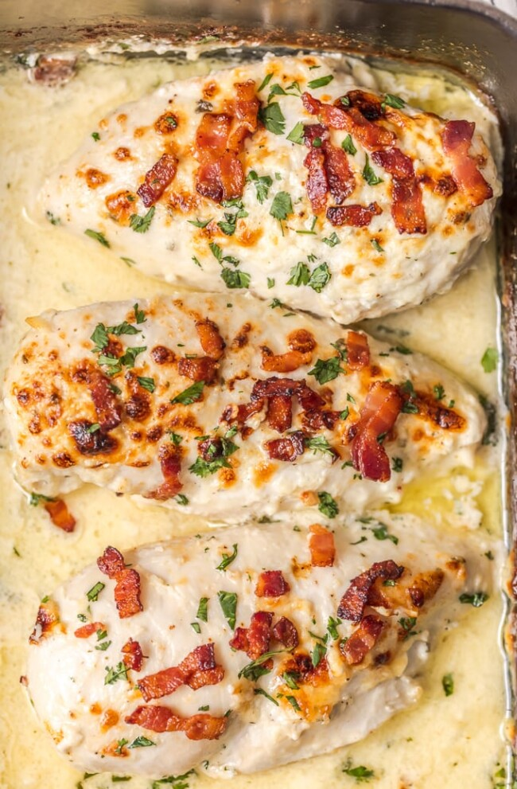

Baked Bacon Ranch Chicken

Description
All hail the Baked Bacon Ranch Chicken! You guys made yourselves loud and clear when I posted our 4 Ingredient Creamy Caesar Chicken.
It quickly rose to one of the most popular recipes on The Cookie Rookie within weeks of when I published. I knew I had to think of some other easy options that were similar but with different flavors, and this Ranch Baked Chicken with Bacon was formed!
- boneless skinless chicken breasts
- ½ cups Ranch dressing
- ½ cup sour cream
- 1-1½ cup grated Parmesan cheese divided
- Kosher salt
- Freshly grated black pepper
- 1/4 cup cooked bacon crumbles
- Garnish: diced fresh parsle
Steps
- Heat oven to 375°F and spray an 8 x 11-inch baking dish with cooking spray.
- If the breasts are uneven in thickness, pound them to an even 1” thickness using a meat pounder.
- Sprinkle both sides of meat with half the grated Parmesan cheese, salt and freshly ground black pepper. Place the chicken in the prepared baking dish.
- In a medium bowl, whisk together Ranch dressing and sour cream. Pour the mixture over the chicken breasts and sprinkle with remaining Parmesan cheese.
- Bake at 375°F for 20-30 minutes or until a meat thermometer inserted in the thickest part of the breast reads 150°F.
- Set oven to broil and broil the breast an additional 2-4 minutes or until the chicken turns golden. It will burn quickly so watch closely.
- The chicken is cooked through when the thermometer reads 160°F when inserted in the thickest part of the middle breast.
- Remove from the oven and sprinkle with cooked bacon crumbles. Allow the chicken to rest a few minutes before serving.
- Garnish with diced parsley, if desired.
- Enjoy!